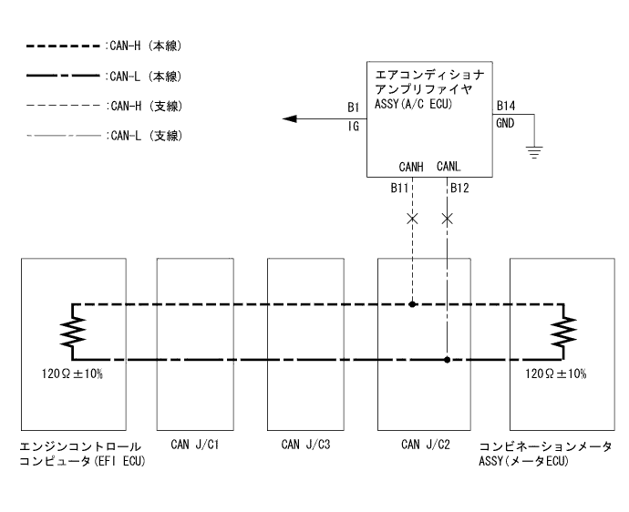
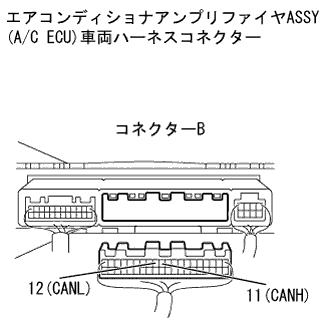
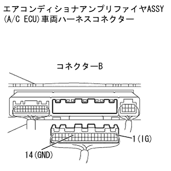

CAN Communication System A/C ECU Communication Stop Mode |
| Diagnosis Item | Symptom | Suspected Area |
|---|---|---|
| Air Conditioning ECU Communication Stop Mode | 'A/C' is not displayed on the 'CAN Bus Connected ECU Check' screen of TaSCAN |
|

| Step 1 | CAN Bus Open Circuit Inspection (A/C ECU Branch Line) |
 |
Turn the IG OFF and disconnect vehicle harness connector B of the air conditioner amplifier assembly (A/C ECU) from the air conditioner amplifier assembly (A/C ECU).
Measure the resistance between each pair of terminals of the vehicle harness connector of the air conditioner amplifier assembly (A/C ECU).
| Tester Connection (Terminal Symbol) | Condition | Standard |
|---|---|---|
| B11(CANH) - B12(CANL) | IG OFF | 54 to 69Ω |
|
| ||||
| OK | |
| Step 2 | Inspect Wire Harness (ECU Power Source System) |
 |
Using SST (Toyota electrical tester), measure the resistance and voltage between each terminal of the air conditioner amplifier assembly (A/C ECU) vehicle harness connector and body ground.
| Tester Connection (Terminal Symbol) | Condition | Standard |
|---|---|---|
| B14 (GND) - Body ground | Always | Below 1 Ω |
| Tester Connection (Terminal Symbol) | Condition | Standard |
|---|---|---|
| B1 (IG) - Body ground | IG ON | 11 to 14V |
|
| ||||
| OK | ||
| ||